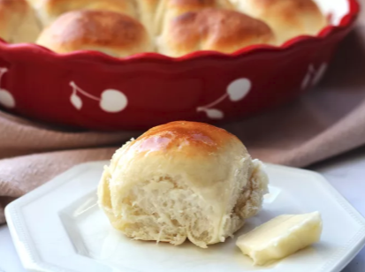

Amish Beef and Noodles

Description
These dinner rolls bake up fluffy and golden with just a hint of sweetness.
Brush warm rolls with melted butter just before serving.
Ingredients
- 2 cups all-purpose flour, divided, or as needed
- 2 tablespoons white sugar
Instructions
- Gather the ingredients.
- Combine ¾ cup flour, sugar, undissolved yeast, and salt in a large bowl.
Home page